01 South on Schiedamsedijk
Starting on the West side of Churchillplein, head North along the cycle path towards the Erasmus bridge.
Continue 0.6 km along Schiedamsedijk.
On your left, you pass the Maritime Museum's outdoor exhibits in Leuvehaven.
Starting at the centre of Rotterdam and cycling West, it is a fairly long and unattractive ride to the edge of the city, compared to cycling North or East. This route makes the best of it, and provides a quick ride past Marconiplein and Schiedam to Vlaardingen, and then along to the start of the excellent Nieuwe Waterweg route at West Vlaardingen that takes you along the water to Maassluis and Hook of Holland. Distance: around 15 km.
In the following directions, street names are given in italics. Directions refer to the red and white signposts for cyclists.
01 South on Schiedamsedijk
Starting on the West side of Churchillplein, head North along the cycle path towards the Erasmus bridge.
Continue 0.6 km along Schiedamsedijk.
On your left, you pass the Maritime Museum's outdoor exhibits in Leuvehaven.
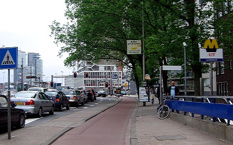
02 Right after Leuvehaven Metro station
After Leuvehaven Metro station, turn right on the cycle-path at the cross-roads.
Continue 0.5 km along Vasteland.
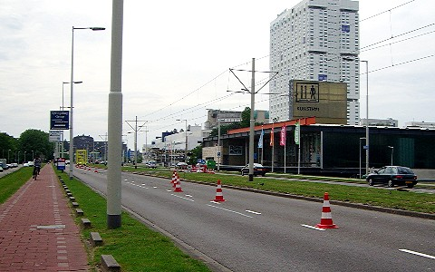
03 Continue past Kunsthal
Continue past the Kunsthal gallery on your right, and the elegant curved terrace of Konigin Emmaplein on your left.
Continue along Westzeedijk.
Note that this photo was taken from the cycle path on the left-hand side of the road, because in May 2007 the other cycle path was closed.
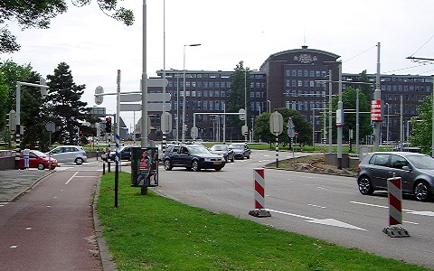
04 Pass roundabout on left-hand side
At the Drooglever Fortuynplein roundabout, cross before the roundabout to the cycle path on the other side of Westzeedijk, pass the roundabout on the left-hand side, and go straight ahead past the large building on the right.
On your left, you pass the Euromast before the roundabout and the river police jetty after the roundabout.
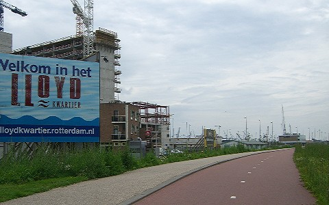
05 Continue along Westzeedijk
On your left, you pass the new Lloydquartier buildings, in construction in summer 2007.
Continue along Westzeedijk.
On your right, you pass the windmill at Delfshaven.
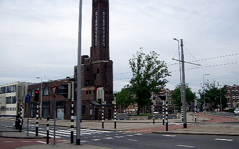
06 Right at Diepeveen tower
When the tram tracks fork right, just before the brick tower with 'Diepeveen' in vertical right letters, cross right on the the cycle path
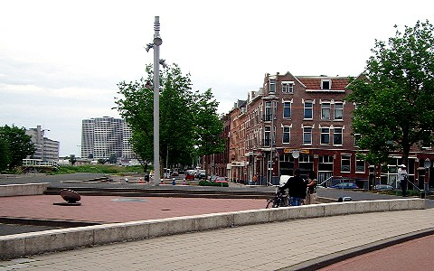
07 Immediate left towards Marconiplein
After 100 metres, immediately after the paved area on the left, turn left and follow Hudsonstraat around to the right towards the three square towers at Marconiplein, with the houses on your right, and the trees and grass bank on your left.
Continue along Hudsonstraat.
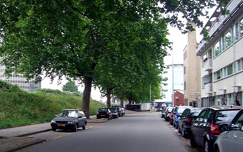
08 Straight-ahead onto Marconiplein
At the end of Hudsonstraat bear left off the road on the cycle path to Marconiplein.
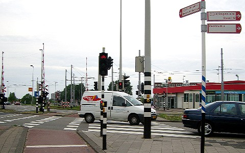
09 Pass metro station towards Schiedam
At Marconiplein metro station, on your right, continue straight-ahead, following the red and white cycle route signpost to Schiedam.
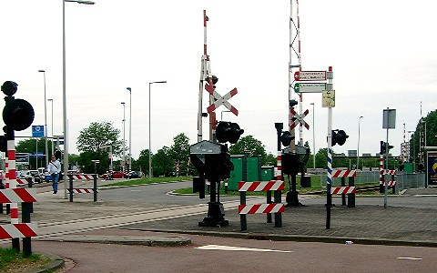
10 Left across tram tracks towards Schiedam
After 100 metres, turn left across the tram tracks, following the sign to Schiedam.
Continue straight-ahead across the next crossing.
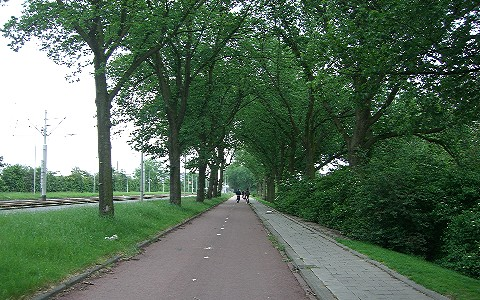
11 Continue on Schiedamseweg towards Schiedam
Follow the cycle path under the trees, with tram tracks on your left and a bank sloping down on your right.
Continue on Schiedamseweg towards Schiedam.
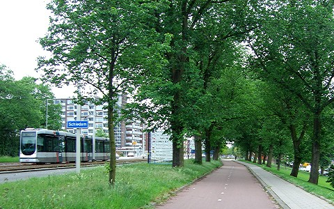
12 Continue into Schiedam
Continue straight-head past the sign as you enter Schiedam.
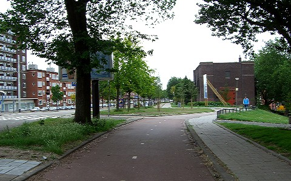
13 Continue on Rotterdamsedijk
At the next junction, continue straight-ahead on Rotterdamsedijk.
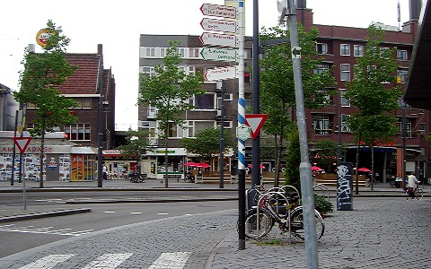
14 Bear left towards Vlaardingen
In Schiedam, where the cycle path curves right on grey cobbles, bear left, following the sign to Vlaardingen.
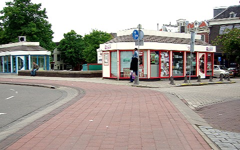
15 Continue on Koemarkt
After 100 metres, continue on the red paved cycle path, and follow the road around to the left and across the bridge.
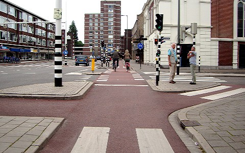
16 Straight-ahead
After 150 metres, continue straight-ahead on Oranjestraat.
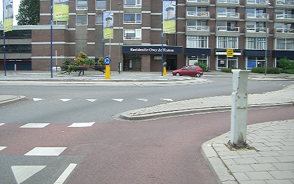
17 Left at roundabout
After 100 metres, cross the Oranjebrug bridge and turn left at the roundabout.
18 Right on Schoolstraat
After 100 metres, turn right on Schoolstraat, and continue along the road.
19 Join cycle path at park
After 500 metres, when houses on the right give way to a park, join the cycle path on your right.
Continue on Willem de Zwijgerlaan.
20 Right on Westfrankelandsedijk
After 150 metres, turn right on Westfrankelandsedijk.

21 Continue on Westfrankelandsedijk
At the next junction, continue straight-ahead on Westfrankelandsedijk.
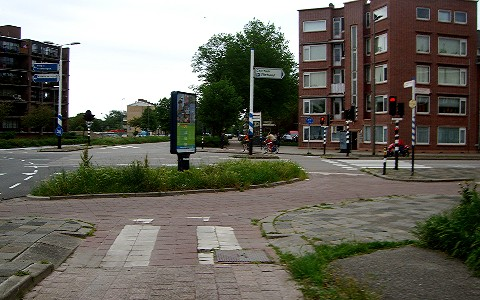
22 Left at crossroads
At the next big crossroads, go straight-ahead across the road and turn left, following the sign to Vlaardingen.
Continue on Vlaardingerdijk.

23 Cross to central cycle path
After 300 metres, cross to the central cycle path to your left.
Continue downhill on Vlaardingerdijk.
You pass underneath the Vijfsluizen metro station, then the A4 motorway, then continue uphill.
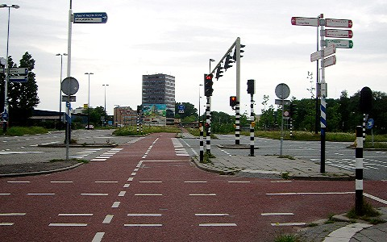
24 Continue towards Vlaardingen-Oost
After 250 metres going uphill, at the cycle signpost, continue straight-ahead on Schiedamsedijk towards Vlaardingen-Oost railway station.
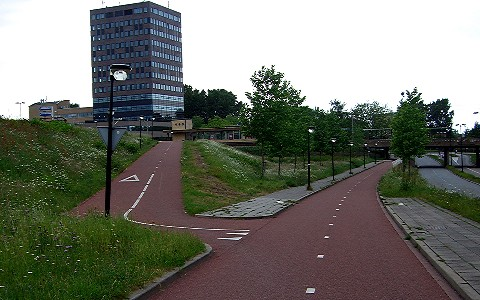
25 Left on cycle path up bank
After 200 metres, going downhill again, turn left on the cycle path going up the bank to your left.
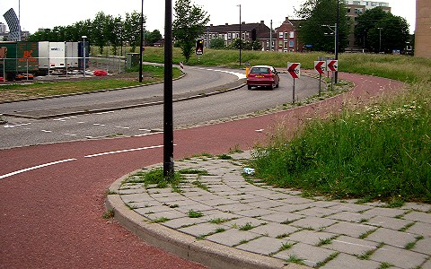
26 Left towards road
After 100 metres, at the top of the slope, turn left towards the road, and then right along road.
Continue on Vulcaanweg.
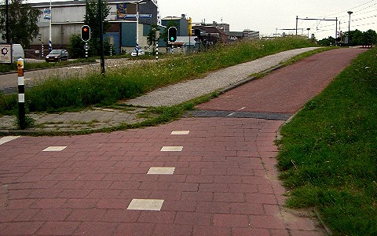
27 Left across road
Where the cycle path bears right up the slope, turn left across the road.
Continue on the cycle path next to the single railway track that curves to the left.
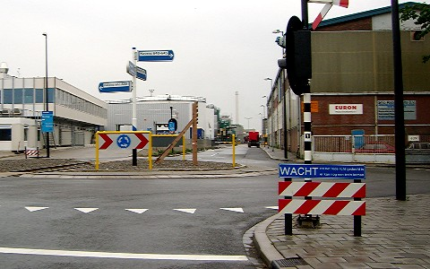
28 Right at roundabout
After you join the road, turn right at the roundabout.
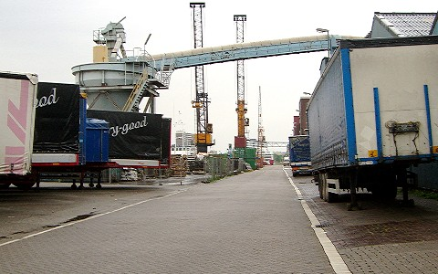
29 Continue along harbour
Continue along the side of the Koningin Wilhelminahaven, past various cranes and ships.
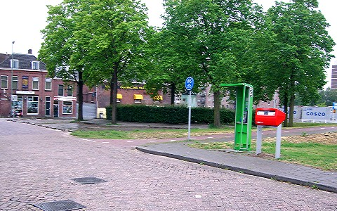
30 Right on cycle path
At the end of the harbour, after following the road to the left, turn right on the cycle path.
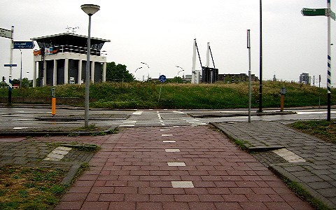
31 Right across road
At the road, cross and turn right along the cycle path on the other side.
Continue straight-ahead on Oosthavenkade, with the water on your left, across the railway level-crossing.
Shortcut: if you are not stopping in Vlaardingen, then cross the road and turn left instead across the Deltabrug bridge, continue on Deltaweg, and rejoin the route after 750 m at waypoint 35.
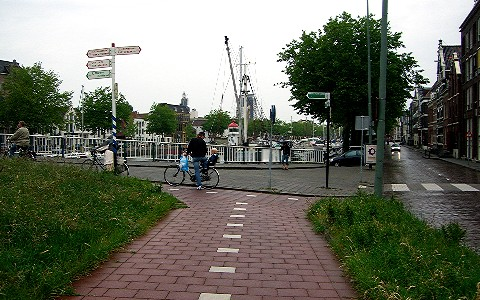
32 Left towards Maassluis
100 metres after the railway, turn left on the cycle path, over the bridge, following the sign to Maassluis.
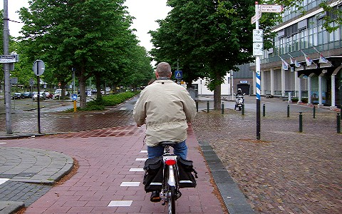
33 Continue along road
On the other side of the bridge, continue straight-ahead on the road, on Parallelweg.
On your left, you pass Vlaardingen Centraal railway station.
This is a good place to take a detour for refreshments: turn right on Westhavenkade and after 500 metres you come to Bloemenpaviljoen - a pavilion-style cafe on your right, with a terrace for the sun, and a covered outside area for shelter from the rain.
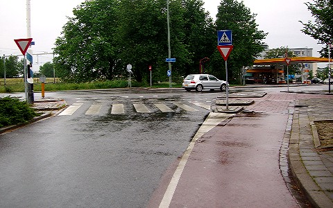
34 Left across railway
At the end of the road, cross and turn left on the cycle path across the railway level-crossing.
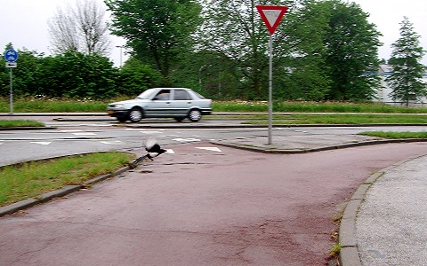
35 Bear right on cycle path
Follow the cycle path around to the right.
Continue on Deltaweg.
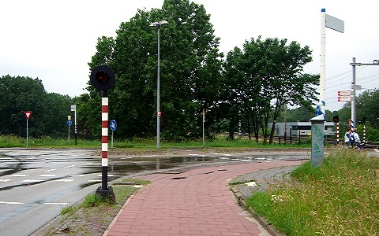
36 Left across road before level-crossing
At the next level-crossing, turn left across the road, and continue along the cycle path on the other side.
Continue on Deltaweg.
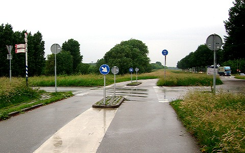
37 Left towards Maassluis
At the next junction, turn left, following the sign to Maassluis.
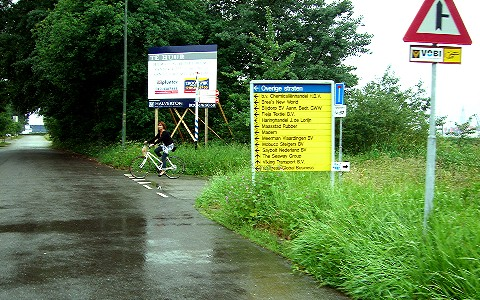
38 Right towards Maassluis
After 40 metres, turn right, following the sign to Maassluis.
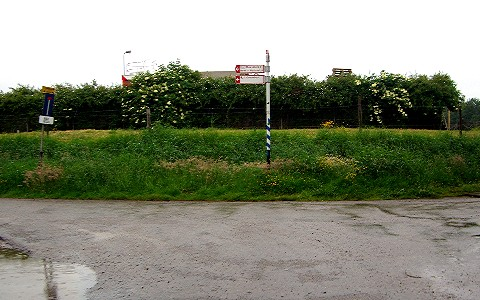
39 Left towards Maassluis
After 200 metres, turn left, following the sign to Maassluis.

40 Right along cycle path
After 250 metres, follow the cycle path around to the right, next to the Nieuwe Waterweg.
Continue 4.5 km to Maassluis.